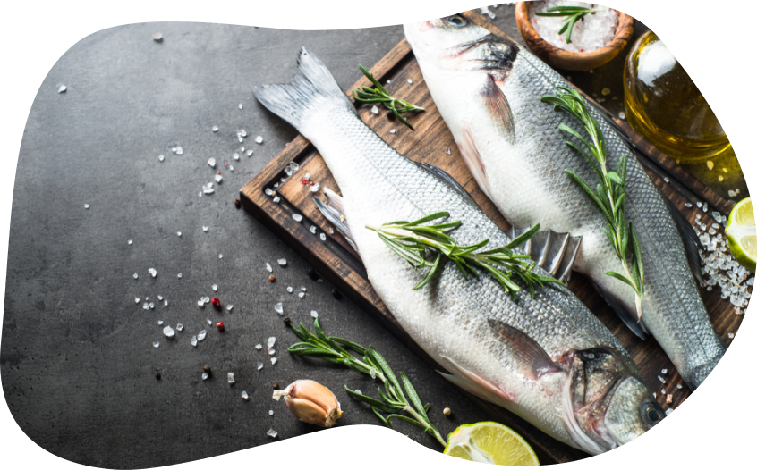

Знакома ли Вам ситуация, когда при подсчете семейного бюджета Вы хватаетесь за голову, обнаружив, какая сумма на самом деле уходит на питание семьи? Скорее всего, да. Она возникает даже в семьях без особых финансовых затруднений, что уж говорить о кризисных периодах жизни...
Однако даже если Вы приняли твердое решение оптимизировать расходы на питание, внимательно изучите наши советы о том, на каких продуктах нельзя экономить и почему!
Овощи и фрукты
Обычно эта статья расходов первой летит в виртуальную мусорную корзину. Мы спешим отказаться от покупки свежей зелени («все равно половина завянет!»), сократить потребление овощей («все равно ими не наешься») и экзотических фруктов («проживу я и без авокадо на завтрак»).
Между тем овощи и фрукты — это источник не только ценных витаминов и микроэлементов, но и важнейших для нашего организма пищевых волокон (клетчатки). Именно клетчатка помогает регулировать процесс пищеварения и поддерживает правильную работу кишечника. Не зря даже Минздрав РФ рекомендует съедать в день не менее 400 г овощей и фруктов.
Наш совет:
обратите внимание, что не обязательно выбирать дорогие и экзотические продукты. Обычная капуста, сезонные овощи и местные фрукты также являются отличным источником полезных веществ и клетчатки и не наносят урона бюджету.
Наш совет:
старайтесь включать жирную морскую или выращенную в хороших условиях рыбу в свой рацион хотя бы один-два раза в неделю.
Рыба
Вторая популярная статья, которая регулярно попадает под сокращение по самым разным причинам. Кто-то не любит ее с детства, кому-то она пахнет при готовке, некоторые вообще не понимают, зачем она нужна в рационе...
На самом деле рыба — это практически незаменимый источник полиненасыщенных жирных кислот, важных для полноценного функционирования нашего организма. Они участвуют в процессах обмена веществ, помогают поддерживать сердечно-сосудистую систему, уровень холестерина и даже гладкость и силу волос.
Наш совет:
старайтесь включать жирную морскую или выращенную в хороших условиях рыбу в свой рацион хотя бы один-два раза в неделю.
Молочные продукты
Здесь важно не экономить не только на количестве, но и на качестве. Кисломолочные продукты и напитки являются важной частью рациона, помогающей поддерживать здоровое пищеварение и правильный баланс микрофлоры.
Однако важно не только регулярно употреблять их в пищу, но и внимательно следить за составом выбранных вами продуктов. Они не должны содержать заменителей молочного жира, восстановленного молока, нежелательных консервантов и красителей.
Наш совет:
сэкономить на покупке молочных продуктов можно (и нужно), отказавшись от дорогих йогуртов, творожков и других продуктов, содержащих добавки и подсластители. Это, кстати, не только выгодно, но и полезно!
Наш совет:
замороженные полуфабрикаты отлично подходят для акционные закупок. Не знаете, что это такое? Читайте наш материал «Неочевидные лайфхаки экономных закупок» и питайтесь разумно и правильно!
Полуфабрикаты
Не будем никого обманывать: жизнь редкой современной семьи обходится без периодической покупки полуфабрикатов... Вы тоже не готовы отказываться от этой удобной возможности сэкономить время и силы на готовку в разгар наряженной рабочей недели?
В таком случае не экономьте на их качестве. Покупайте полуфабрикаты только от проверенных производителей, внимательно читайте состав и избегайте дешевых заменителей мяса и молочных продуктов.
Наш совет:
замороженные полуфабрикаты отлично подходят для акционные закупок. Не знаете, что это такое? Читайте наш материал «Неочевидные лайфхаки экономных закупок» и питайтесь разумно и правильно!